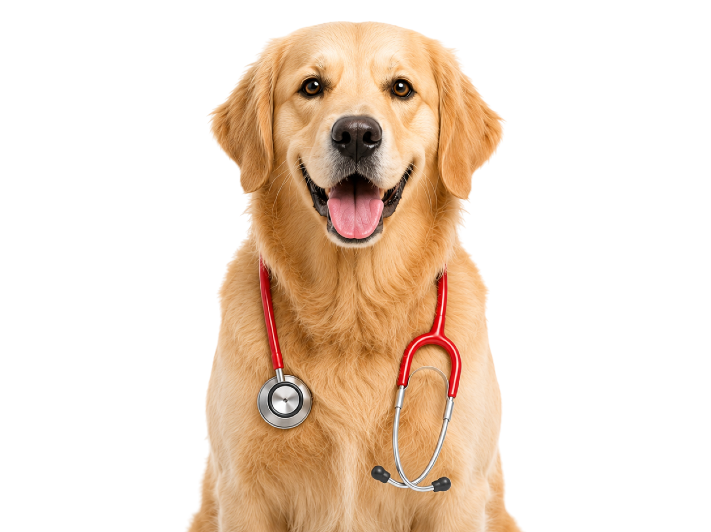
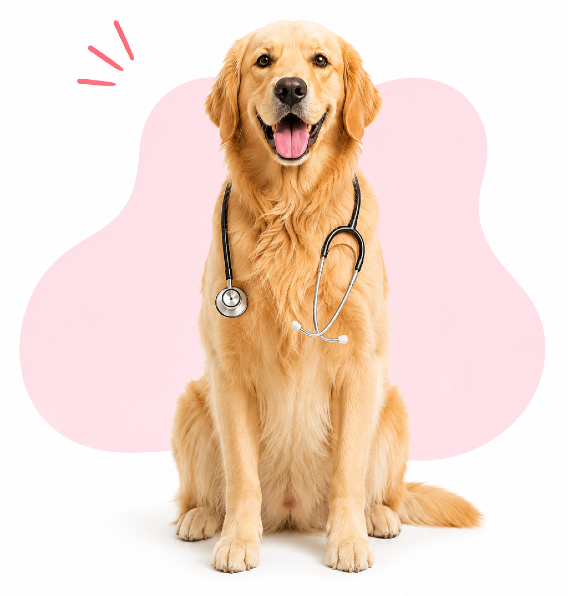
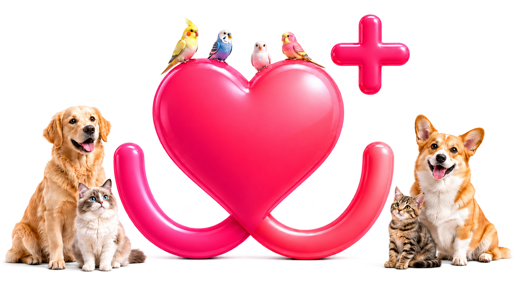

Max
Max
О компании
Ветеринарный центр Dr.Hug был создан 18 июня 2018 года в историческом месте г. Москвы, в единственном старинном особняке района Ходынка, а 1 февраля 2021 года открылся второй центр в районе Фили-Давыдково. Мы посчитали, что возможность сочетать ветеринарную медицину с сервисом создаст дополнительный комфорт для владельцев животных и будет способствовать повышению качества совместного проживания и общения человека с питомцем. Главной гарантией комфорта для владельцев является дружный и заботливый коллектив: врачи, администраторы, ассистенты.
Высокий профессионализм и современное оборудование являются залогом благополучного лечения без дополнительных волнений.


Наша миссия
Обеспечить квалифицированную медицинскую помощь и ее доступность домашним животным через непрерывный обмен знаниями с ведущими ветеринарными клиниками России и Европы, через постоянное расширение своих клинических компетенций.
Наша цель
Дарить счастье и удовольствие от общения и настоящей дружбы человеку и питомцу.
Почему мы?
- Современные методы обследования.
- Высокая степень ответственности за проведенную диагностику, профилактику и оказанное лечение каждого пациента.
- Гарантия обоснованного назначения процедур, препаратов и методов лечения.
- Менеджмент качества оказания услуг.
- Постоянное развитие знаний, навыков и практического опыта персонала.

Исключениями являются 5 НЕ
- Мы НЕ рискуем жизнью пациентов, поэтому не принимаем больных с вирусной инфекцией, так как не располагаем необходимой площадью для размещения инфекционного стационара. В случаях выявления вирусных инфекций (панлейкопении, калицивируса, парвовироза, чумы собак и т. д.) пациент будет направлен в клинику, которая специализируется в этой области и имеет профильный стационар.
- Мы НЕ проводим эстетические операции выставочным животным.
- Мы НЕ купируем уши и хвосты.
- Мы НЕ удаляем голосовые связки.
- Мы НЕ удаляем когти, а только подстригаем.
